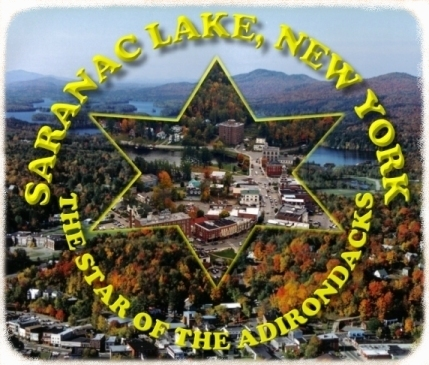
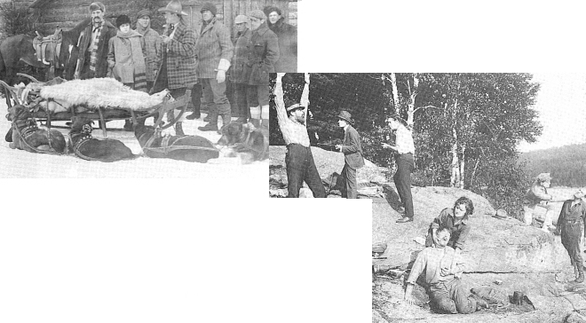
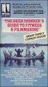

In 1910 William F. Cooper, better known as "Caribou Bill", set up an Alaskan type village on the Edgewood Road, where the Saranac Lake High School now stands. He called his venture the ARCTIC FILM COMPANY. The set was complete with a false-front village and lots of dog sleds. Five years later, in 1915, Bill moved on to Port Henry to create another film set and the Saranac Lake film set became BUCKLEY'S MOVING PICTURE CAMP, owned and operated by Daniel T. Buckley. The camp was productive until about 1923. If you happen to see an old silent film featuring Alaska and dogsleds, most likely it was filmed in Saranac lake.
"The Shooting of Dan McGrew", "Lure Of The Yukon", "Chilkoot Pass", "The Perils Of Pauline", "The Call Of The Wild" and "Deluxe Annie" with Norma Talmadge and featuring Saranac Lake skating star Ed Lamy, were filmed in Saranac Lake. Shot in 1914, "The Perils Of Pauline", which starred Pearl White and Craine Wilbur, included a scene where Pearl, on horseback, dove from a 65 foot high cliff on Bluff Island into Middle Saranac Lake. Harry Duso, patriarch of the Duso's Sales And Service and Crescent Bay Marina family, pulled off the stunt with no injuries to himself or the horse. Harry was wearing a dress during the jump, which must have made for difficult swimming.
In the winter of 1916 scenes for "The Silver Shell" and "Blazing Love" were shot here. In that same year scenes for "Harrigan's Gold", with Eloise Day, were shot at the cave on Mount Pisgah. In 1917 "Jury Of Fate" was filmed here and, during a dry Autumn in 1917, "Bitter Trails", starring Craig Bannister and Vanessa Tremaine, was filmed. During the filming of this movie a campfire went awry resulting in the burning of seven acres of land. In 1922 the silent flick, "Go Get 'em Hutch", was shot.
Several local people appeared in some of these classic silents. Dew Drop Morgan's mother, Martha Morgan, had a strong roll in "The Great Mail Robbery", which was filmed here around 1912.
Alice Brady, head waitress at the St. Regis Hotel, performed a skating stunt on Moody Pond in 1921. She went through the ice in the place of Martha Mansfield, a popular actress of that era. Some shots of the village of Saranac Lake can be seen in these movies.
Directed by Louis J. Gasnier and Donald MacKenzie
Cast: Pearl White [Pauline], Crane Wilbur [Harry Marvin], Paul Panzer [Koerner / Raymond Owen], Edward José [Sanford Marvin], Francis Carlisle (Francis Carlyle) [Hicks, Owen’s henchman], Clifford Bruce [the gypsy leader], Donald MacKenzie [‘Blinky Bill’], Jack Standing [Ensign Summers], Eleanor Woodruff [Lucille], Leroy Baker, Louise Du Pre, Oscar Nye, Sam Ryan, Louis J. Gasnier, Joe Cuny, Charles ‘Pitch’ Rebada, Frenk Redman, Floyd Buckley, Milton Berle [child], Bobbie Arnst, Sidney Blackmer, Grace Darling, Chief Thunderbird, Meridel Le Sueur [Pearl White’s fencing stand-in], Harry Duso [horseriding stuntman]
The hero and heroine are not reunited until the very end of the picture, by which time Jeanne has become the unwitting cause of the deaths of two men -- who, fortunately for the purposes of the plot, are the villains of the piece. The Jury of Fate contained many of the bizarre, surrealistic elements that would soon become de rigueur in the films of director Tod Browning. ~ Hal Erickson, All Movie Guide
As was often the case in the silent era, the lead heavy had an equally dangerous female in his employ, here played by Pearl Shepard, but both were defeated by the irrepressible Hutch in the final chapter, "Ten Minutes to Live." His protestations to the contrary, Hutchison was doubled by Joe Cuny in the most dangerous sequences, including a leap across the chasm. ~ Hans J. Wollstein, All Movie Guide


In 1982, Fred G. Sullivan, aka Adirondack Fred, filmed "Cold River" in Long Lake, Paul Smiths and Saranac Lake. This was a coming-of-age story about two kids whose guideboat overturns at Buttermilk Falls in Long Lake when their father, an Adirondack guide played by Richard Jaeckel, suffered a fatal heart attack. The time frame appears to be the late thirties. The father wanted his children to experience the real Adirondacks and they obviously did just that.
The guideboat is completely demolished as it goes solo over the falls. It appears that they buried the father and somehow managed to retrieve some of the gear, as they are seen later with heavy winter apparel which was fortunately packed for the fall canoe trip. Coincidently Richard suffered a real life heart attack a few years later as did Fred Sullivan.
The kids try to make it home. They camp for a while in a tent they had salvaged from the gear and feast on a sort of bug soup and boiled leaves. They try, with poor results, to obtain game for the soup pot. This was several years before "Survivor" became an instant hit with couch potatoes.
The kids soon encounter an African-American version of Noah Rhondeau, complete with a sign proclaiming himself mayor of Cold River, population 1. The hermit is played by Robert Earl Jones, father of James Earl Jones. The hermit takes the kids into his cabin and later goes out to check his traps.
They then are accosted by an evil trapper, "Knat", who overplays his role as a nasty "Deliverance" type. The evil trapper, Knat, comes into the cabin, steals their food then leaves the kids to fend for themselves. He then, presumably, kills the hermit while he is checking his traps and returns on Christmas day, while they are singing Christmas carols. He gives the kids a hard time untill he is killed by the boy with a shotgun blast. The kids then burn the cabin and their bridges and set out on the long trudge to civilization. On the way they discover the body of the hermit. They, of course, eventually arrive home.
The movie is based on a book of the same name and is done utilizing the old standby, the flashback. The thoughts are those of an environmentalist type woman, who seems to be a member of the APA., Sierra Club or Greenpeace. While in-flight to the Lake Clear airport aboard an Alleghany Airlines plane she daydreams of days gone by. She is the girl in the story, now grown up, coming back to the Adirondacks to see her sick brother and fight a dam project slated for the region. The dam would flood her beloved Cold River area where long-ago the adventure took place and where her father may still lie buried. It appears she was successful in her fight because there is no dam in that area now. The editing left something to be desired but the Adirondack scenes were nice.

The lead is played by Sullivan himself and he is supported by his wife, family and many friends. In this story, Adirondack Fred battles the symbolic temptress of fame and fortune but is eventually shown where the bear defecated in the woods and, somewhat reluctantly, concedes by dedicating the movie to his wife, Polly, and his kids and getting a real job. Sadly, Fred died in 1996, at 51, while playing basketball at Paul Smith's College. If he had lived and obtained the backing to do a few more films I really believe he would have achieved his goal. He had something that most folks don't have and some are afraid to exercise; imagination, a sense of self and the willingness to take a chance on a dream that could easily end in failure and embarrassment. We sure could use more of his kind.
The movie is destined to become a vital part of Saranac Lake history as it contains a treasury of scenes featuring the places and people who contributed to the ambience associated with life in Saranac Lake in the eighties. Some of the places and people are gone now but, because of Fred's willingness to take a chance, their images will remain digitalized for future generations of Saranac Lakers.
The low-budget action film "King of New York" hit the Adirondacks next in 1990, bringing the always-edgy Christopher Walken as the star. Scenes for "King of New York" were filmed around Saranac Lake, although most of the film takes place in New York City. Not a memorable viewing experience.
Walken must have liked Saranac Lake, because he was back here in another low-budget thriller, "McBain" in 1991. It fared no better than "King".
Will there be more movies made in Saranac Lake? Hope so! Can't wait!!